TEENAGE MUTANT NINJA
TURTLES
| Персонаж |
Оружие |
Муза |
| 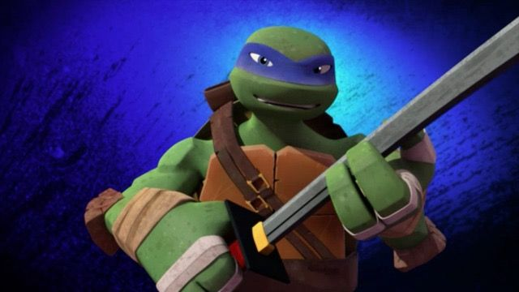 |
Две катаны |
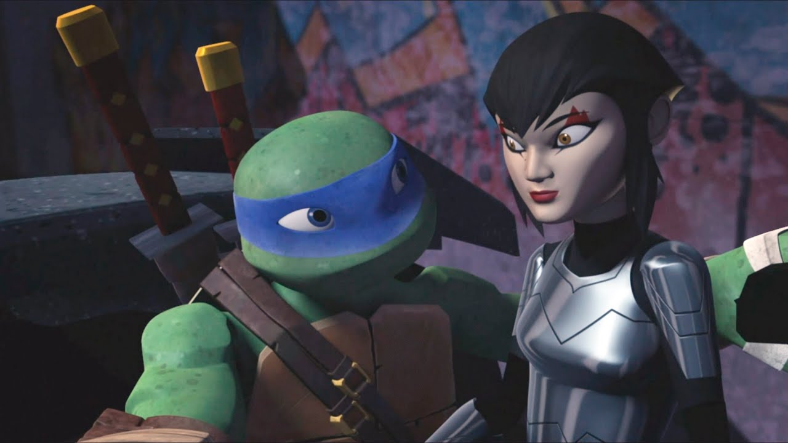 |
| 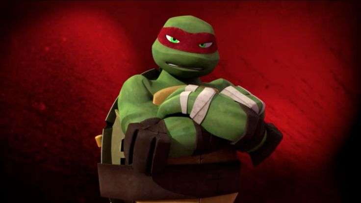 |
Два кинжала-трезубца сай |
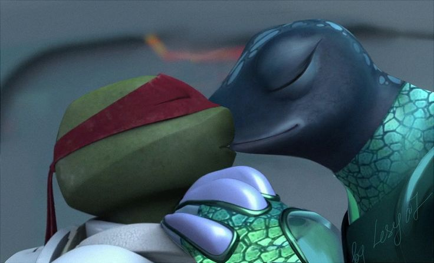 |
| 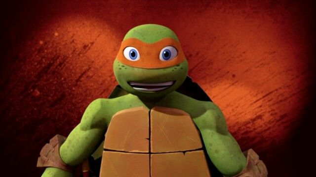 |
Нунчаки, трансформирующие в кусаригаму |
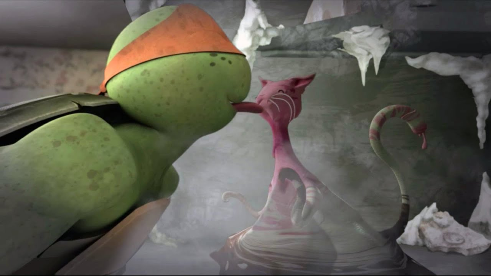 |
| 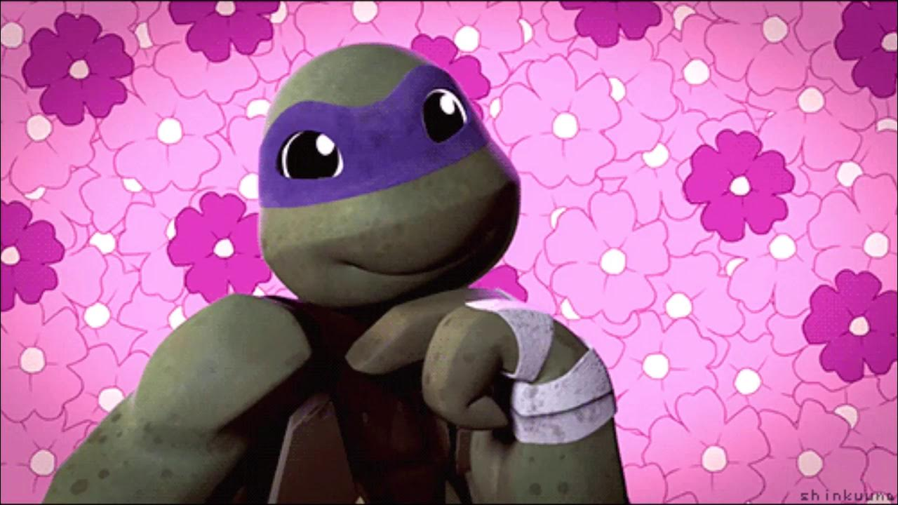 |
Посох Бо |
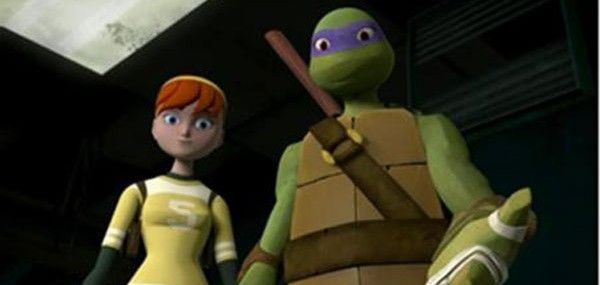 |
| Мистер тренер |
| 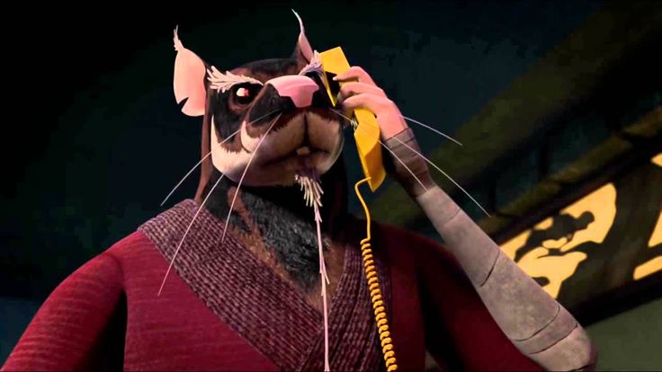 |
Трость с мечом |
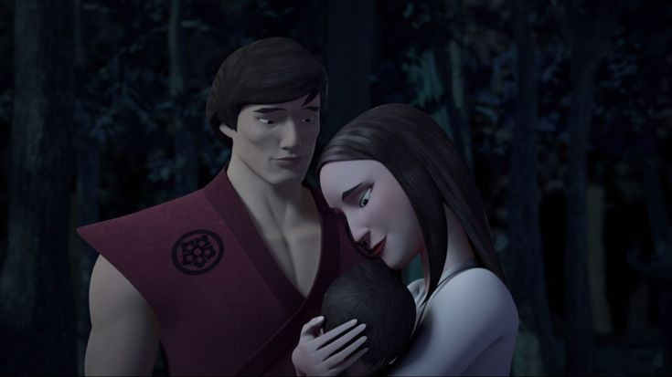 |
| Финал |
| Леонардо |
| 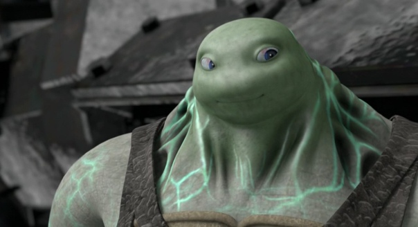 |
Бакстер Стокман не смог заполучить Фуджитоида и взорвал себя вместе с Лео и Кейси Джонсом |
| Рафаэль |
| 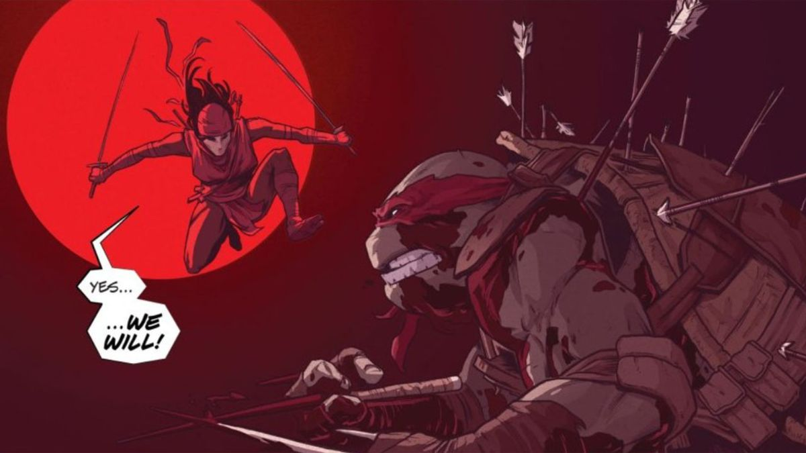 |
Рафаэль погиб в схватке с Карай и ценой своей жизни отправил наследницу Шреддера в кому. |
| Донателло |
| 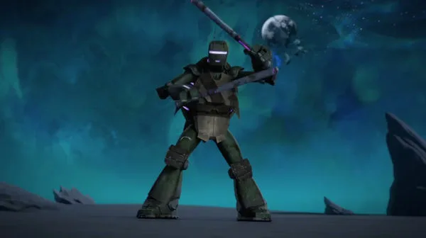 |
Донателло и Сплинтер попытались заключить с Хирото перемирие, но были вероломно атакованы ниндзя и погибли под градом стрел. |
| Микеланджело |
| 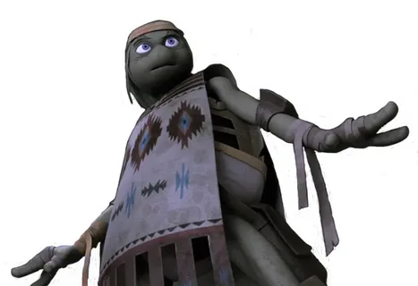 |
Майки находит покой внутри себя и успешно выполняет свою последнюю миссию. |